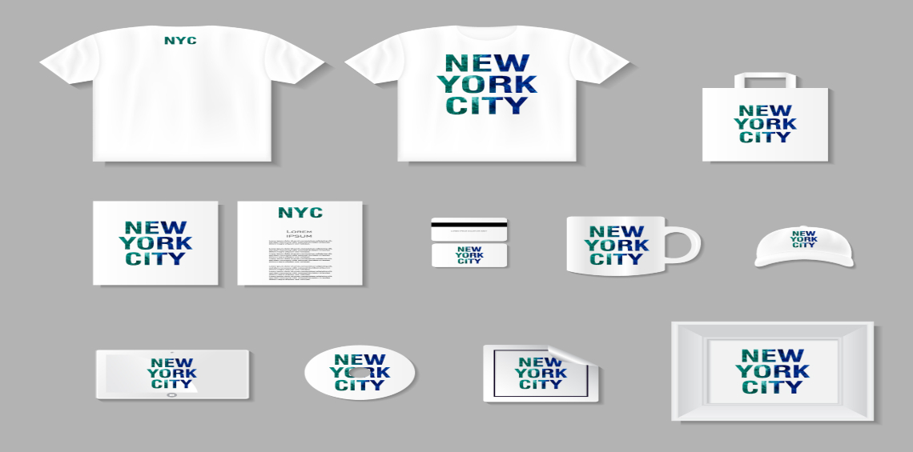
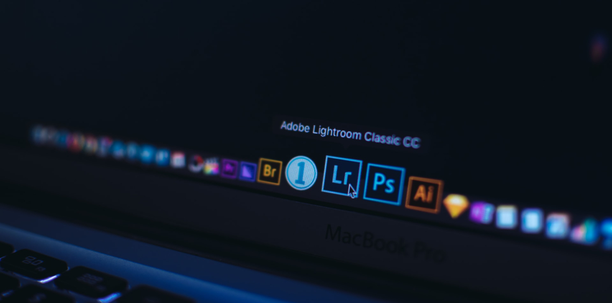

Algunas razones para iniciar tu negocio en linea

Hay muchas razones para explicar por qué tantas personas comienzan un negocio en línea, enseguida le proporcionaremos unas cuantas de ellas.
Para muchas personas, la razón principal por la que deciden empezar un negocio en línea es ganar un ingreso adicional a los ingresos que ya están ganando.
Para otros, lo que empieza como un negocio a tiempo parcial, pronto se convierte en uno a tiempo completo.
Otra de las razones por la que algunas personas deciden iniciar un negocio en línea es que tienen más control sobre su vida laboral.
Así mismo, esto les proporciona una oportunidad para pasar más tiempo con su familia y amigos. Hoy en día demasiado tiempo es dedicado al trabajo, y muchas personas consideran que tienen poco o nada de tiempo para compartir con aquellos que ellos aman.
Además, hay otras razones por las cuales tantas personas hoy en día decidan establecer un negocio en línea.
Antes de iniciar un negocio ten en cuenta lo siguiente
¿Qué producto o servicio desearía ofrecer?
Muchas personas inician un negocio en línea basándose en el conocimiento y la experiencia que ya tienen, mientras que otros pueden detectar un hueco en el mercado. Pero lo más importante que puede hacer es llevar a cabo una investigación con las empresas y los particulares que usted no conoce, a fin de obtener una vista más imparcial.
También, tanto como sea posible, lea e investigue sobre todo lo que pueda acerca de áreas particulares de interés, así como el estudio de los pros y los contras que esto tendrá en relación con los objetivos generales. Además, deberá familiarizarse con sus competidores, ya que esto aumentará su confianza y entusiasmo por la creación
de su negocio en línea.
¿Cómo Comercializar el Negocio?
Es importante, si usted quiere que su negocio en línea prospere, asegurarse de establecer una presencia en la web. La mejor manera de hacerlo es por correo directo, la creación de redes, la exhibición de publicidad etc. Pero qué enfoque funcionará mejor para usted dependerá del producto que venda. La mejor manera de saber qué va a funcionar, es intentando un número
diferente de métodos inicialmente, y luego una vez que determine cual es el mejor, utilícelo. Sin embargo, si usted no está seguro por dónde empezar, entonces observe la forma en que su competencia esta comercializando mejor sus productos... si funciona para ellos, puede funcionar para usted también.
Desarrollar un Plan.
Sin tener un plan sobre la forma de alcanzar sus metas, usted puede encontrar que no solo sus esfuerzos, sino también sus recursos pueden estar siendo desperdiciados.
Tener un plan le proporciona enfoque, la dirección y el impulso para mantener el negocio en marcha. Veremos más a fondo la creación de un plan de negocios en el próximo capítulo.
Verifique las Leyes y Reglamentos
Es importante que compruebe si hay alguna ley o reglamento local en relación a la creación de un negocio en línea desde su casa.
Además, tendrá que obtener las leyes y reglamentos en lo relacionado con ser trabajadores autónomos.
La Creación de la Oficina
En la mayoría de las veces, un negocio en línea se llevará a cabo desde la casa de la persona. Por lo tanto, es importante que usted cree una oficina en casa antes de la puesta en marcha del negocio.
Usted debe disponer todo el equipo necesario que requiera, tales como computadora, conexión a internet, impresora, fax (no es esencial) son solo algunas cosas que usted necesita si quiere tener éxito con su negocio en línea.
Ventajas de hacer sus propios videos de YouTube
¿Eres fan de YouTube? Si le gusta ver videos gratuitos en línea, de varios géneros diferentes, es posible que sea un gran fanático de YouTube. Aunque muchos usuarios de Internet solo ven videos en YouTube, hay muchos que también publican sus propios videos en YouTube.
Si nunca lo ha hecho antes, es posible que se pregunte si realmente debería hacerlo o no. Para determinar si debe o no hacer y cargar sus propios videos en el sitio web de YouTube, querrá examinar las ventajas o los aspectos positivos de hacerlo.
Quizás, la mayor ventaja de hacer tus propios videos de YouTube es que tus videos pueden ser casi lo que quieras que sean. Los videos populares en YouTube en este momento incluyen parodias de comedia, blogs de video, videos instructivos y videos musicales de artistas emergentes.
Ya sea que desee hacer un video blog de usted mismo o si usted y sus amigos simplemente quieren divertirse con una cámara de video, puede hacerlo.
Por supuesto, al hacer un video de YouTube, querrá usar su mejor criterio. Aunque YouTube acepta videos sobre una amplia variedad de temas diferentes, debe proceder con precaución.
Siempre debe tener cuidado con los depredadores en línea; por lo tanto, debe tener cuidado de no divulgar demasiada información sobre usted. Puede que no lo pienses necesariamente, pero también debes asegurarte de no grabar ni publicar nada ilegal en YouTube.
Se ha dicho que YouTube trabaja regularmente con las fuerzas del orden para ayudar a resolver delitos. Eso solo demuestra que nunca sabes quién está viendo tus videos o cuáles podrían ser las consecuencias de publicarlos.
Otra de las muchas ventajas o ventajas de hacer tus propios videos de YouTube es que es relativamente fácil de hacer. Por supuesto, necesitará tener un dispositivo de grabación de video. Lo bueno es que hay varios dispositivos de grabación diferentes que puedes usar.
Por ejemplo, muchos teléfonos celulares ahora vienen equipados con capacidades de grabación de video. Además de los teléfonos móviles, también debería poder utilizar videocámaras o cámaras web tradicionales.
Para obtener la mejor calidad de video de YouTube, querrá tener un programa de software de edición de películas. Los programas de software de edición de películas no solo le brindarán la posibilidad de obtener una vista previa de sus videos, antes de subirlos a YouTube, sino que también debería poder editarlos, si desea eliminar algo, etc.
Antes de iniciar un negocio ten en cuenta lo siguiente
Una vez que haya creado uno de sus videos y lo haya subido a su computadora, encontrará que subir su video al sitio web de YouTube es igual de fácil. De hecho, esa es otra de las muchas ventajas de hacer tus propios videos de YouTube.
Al igual que hacer el video en sí, subir un video de YouTube es tan fácil como puede ser. Si nunca antes ha subido un video a YouTube, debería poder hacerlo con facilidad. La curva de aprendizaje de carga de YouTube es tan fácil que si
continúa haciendo videos para el sitio web de YouTube, los estará subiendo y compartiendo con la comunidad de Internet en muy poco tiempo.
Otro beneficio de hacer tus propios videos y subirlos a YouTube viene después del hecho. Una vez que haya subido sus videos a YouTube y estén disponibles para verlos, cualquier persona con una conexión a Internet puede visitar el
sitio web de YouTube para ver sus videos. Esto significa que miles de personas pueden ver solo uno de tus videos. De hecho, si esos espectadores son miembros registrados de YouTube, pueden calificar sus videos de YouTube o incluso dejar comentarios para usted.
Esta característica es agradable porque le brinda comentarios positivos y, a veces, incluso negativos; comentarios que se pueden tener en cuenta si decide hacer más videos de YouTube y cuando lo haga.
Como puede ver, hay una serie de ventajas o ventajas en la creación de sus propios videos para compartir en YouTube. Como probablemente sepa, también hay una serie de desventajas al hacerlo, incluida la seguridad.
Sin embargo, siempre que muestre precaución al hacer un video de YouTube o cuando hable con otros miembros de YouTube, su experiencia de creación de videos de YouTube debe ser positiva.
Si quieres aprender como iniciar tu negocion con Youtube, te dejo Este Curso que le ha servido a demaciadas personas y puede que a ti tambien.
Para más informacion del curso clic aquí.
Vende Tu Propio Marca

Crea productos físicos con los que tu audiencia se identifique o se sienta orgullosa de llevar. Pon tu logo o tu imagen más representativa en llaveros, camisetas, almohadillas para el ratón, tazas, pins, gorras, mecheros… Y a venderlos.
Si creas comunidad en torno a tu blog, tipo foros o youtubers, puede ser un auténtico pelotazo.
Esto que parece tan poco original, el merchandising de toda la vida de dios, es una fuente de ingresos brutal para muchos proyectos.
Solo tienes que ver a usuarios con una ingente cantidad seguidores, como Pewdiepie y su famoso saludo de puño Brofits, y calcular lo que deben estar facturando por la venta de sus productos publicitarios.
No creas que esto sólo está al alcance de las personas o marcas famosas. Ni mucho menos. La sensación de sentirse parte de una comunidad es algo muy poderoso. Yo mismo, cuando era un imberbe y jugaba al Starcraft, me compraba las camisetas de mi clan y demás pijadas. Vender da dinero. Punto.
Vende Software

Crea y vende tu propio software para solucionar problemas o hacerle la vida más fácil a tu público objetivo. No tiene que ser el software más complicado del mundo, solo atacar una necesidad específica y resultar de utilidad.
Un software es un infoproducto muy interesante, ya que es escalable y puedes aprovechar el tirón de tu blog (si lo tienes) y de tu marca personal para vendérselo a tu audiencia y que te ayude a ganar repercusión.
Por ejemplo, Derek Halpern, autor del popular blog Social Triggers, desarrolló un software llamado Zippy Courses que ayuda a su audiencia a crear cursos online.